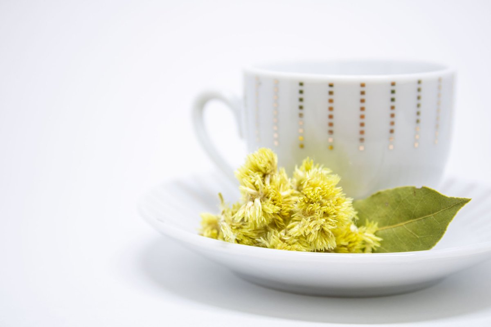
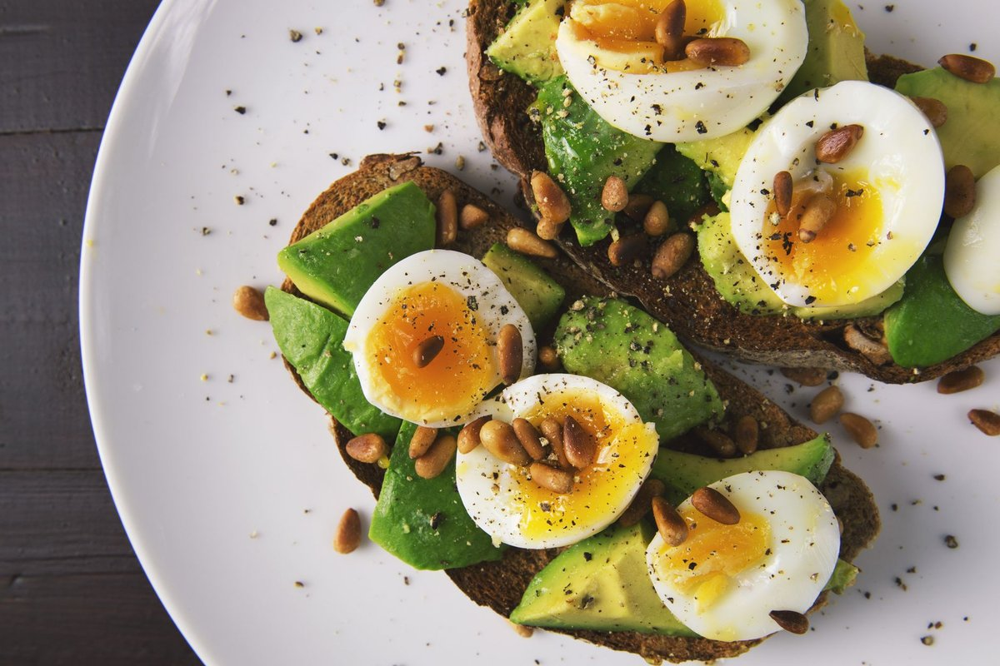

Fenugreek May Help Sexual Function, Period Pain, And Lactation

Key takeaways
- I remember sitting on my bathroom floor two years ago, doubled over from brutal menstrual cramps, wondering why my body felt like it was actively fighting against me.
- Fenugreek May Help Sexual Function, Period Pain, And Lactation, but back then, I thought it w
- Focus on: How Fenugreek May Help Sexual Function, Period Pain, And Lactation.
I remember sitting on my bathroom floor two years ago, doubled over from brutal menstrual cramps, wondering why my body felt like it was actively fighting against me. Fenugreek May Help Sexual Function, Period Pain, And Lactation, but back then, I thought it was just a random spice sitting in the back of my kitchen pantry.
After weeks of sleepless nights and endless heating pads, I decided to dive deep into clinical herbal research to fix my hormonal mess. What I discovered changed my morning routine forever, helping me reclaim my energy and physical comfort naturally.
When it comes to reproductive health, your body craves targeted botanical support rather than harsh quick fixes. Here is what you need to know about integrating this powerful seed into your daily life.
How Fenugreek May Help Sexual Function, Period Pain, And Lactation
It sounds too good to be true that one simple seed can tackle three major areas of hormonal health. Yet, the research behind fenugreek extract shows remarkable results for women at various life stages.
For libido, standardized fenugreek extracts help maintain healthy testosterone and estrogen balance without causing unnatural spikes. Women taking roughly 600mg daily reported significant improvements in arousal and overall satisfaction.
When my monthly cycle used to hit, I felt completely sidelined by lower back ache and severe pelvic spasms. Fenugreek acts as a natural anti-inflammatory agent, inhibiting the prostaglandins that trigger intense uterine contractions during your cycle.
For nursing mothers struggling with output, fenugreek works as a proven galactagogue. It stimulates sweat production—and since mammary glands are modified sweat glands—it rapidly enhances milk flow within 24 to 72 hours.
The 2-Minute Win
Soak 1 teaspoon of whole fenugreek seeds in a warm glass of water overnight. Drink the water and chew the softened seeds first thing in the morning to soothe your digestion and support hormonal harmony.
Practical Ways to Use Fenugreek Daily
You do not need to choke down raw powder to get the benefits. I love adding ground fenugreek seeds to my morning oatmeal alongside cinnamon and maple syrup to mask its naturally bitter maple-like flavor.
If you prefer a simpler approach, brewing a quick decoction works wonders. Simmer a tablespoon of seeds in two cups of water for ten minutes, strain, and sip it hot with a dash of honey.
Before making drastic changes, check out this related healthy tip on tracking your cycle symptoms effectively. Paired with herbal support, keeping a daily symptom log changed everything for my personal recovery journey.
Consistency beats high doses every single time when you are working with gentle herbal galactagogues and hormone balancers.
Supporting Your Gut for Better Hormone Absorption
Herbal remedies like fenugreek only work if your digestive tract can actually break down and absorb the active compounds. A sluggish, inflamed gut lining will prevent you from reaping the full medicinal benefits of seeds and botanicals.
During my recovery, I realized my gut flora needed serious daily support alongside my herbal routine. Adding a high-quality digestive supplement like the Daily Synbiotic Capsule helped smooth out my digestion, ensuring my body actually absorbed the nutrients I was consuming.
You can also read this another practical guide to learn how microbiome diversity impacts systemic inflammation. Keeping your stomach happy makes a massive difference in how quickly herbs take effect.
What to Expect and Safety Precautions
Patience is key whenever you work with whole-body botanical remedies. While lactation support can happen in a couple of days, improvements in sexual desire and cramp relief usually take two full menstrual cycles to notice fully.
Be aware that fenugreek can give your sweat and urine a sweet, maple-syrup smell—which is totally harmless but surprising if you are unprepared! Make sure to review this similar wellness insight on managing gentle body detox symptoms smoothly.
If you have diabetes or take blood thinners, consult your practitioner first because fenugreek naturally lowers blood glucose levels. Check this practical resource to stay consistent with this approach without overwhelming your system.
Take it slow, listen to your physical signals, and feel free to explore more healthy-habits guides as you build your ultimate wellness routine. Remember, small, daily micro-habits always compound into massive long-term relief.
Educational only — not medical advice.
Disclosure: This page may contain affiliate links.
Recommended Reading
- The Ultimate Guide to Daily Hydration: Boost Energy & Wellness
- Boost Your Sleep Quality: Natural Remedies & Tips for Better Rest
- Boost Your Gut Microbiome: The Key to Better Health & Digestion
More in healthy-habits
How I Made Walking for Health Stick for Real Weight Loss
Discover how Walking for Health transformed my weight management journey with sustainable, low-impact routines. Simple s
Read article →
healthy-habitsWhat Nobody Tells You About High Protein Breakfast
Discover why a high protein breakfast transformed my energy levels, fueled my active days, and finally ended my 10 AM mi
Read article →